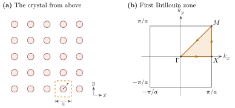
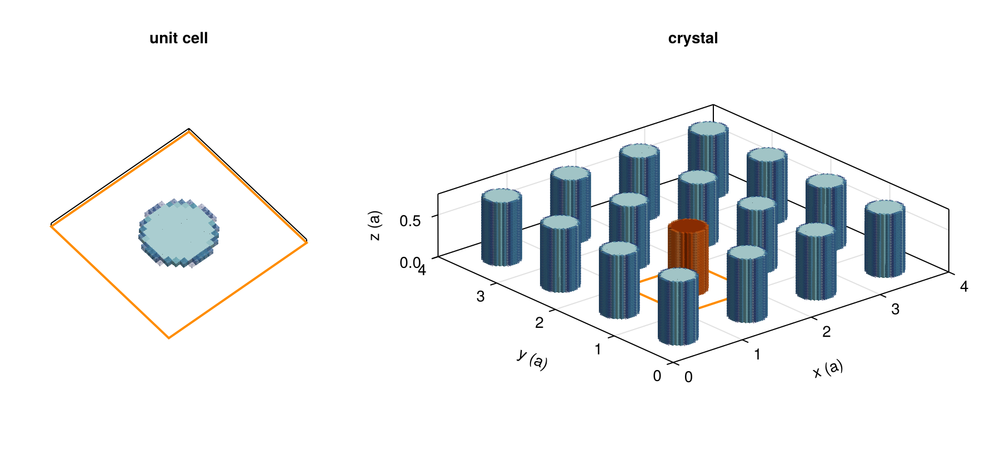
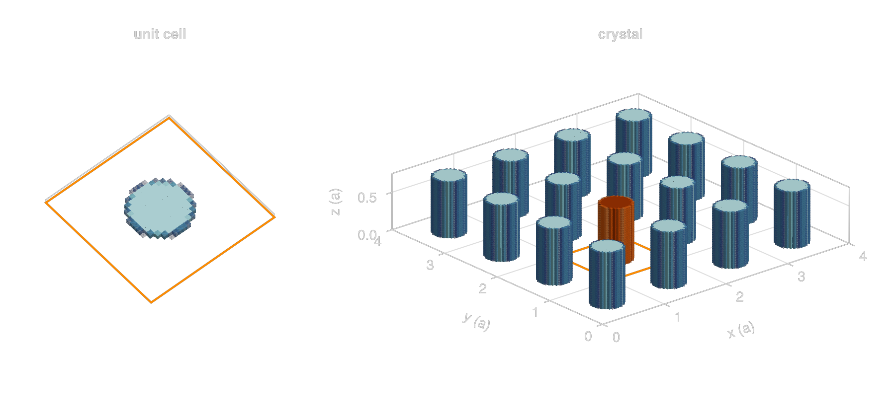
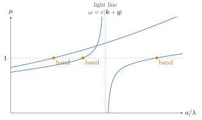
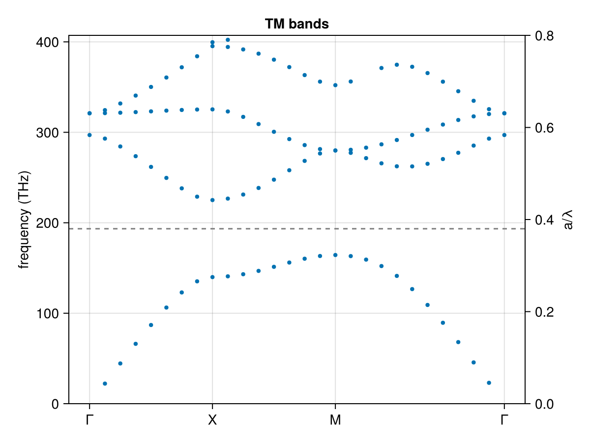
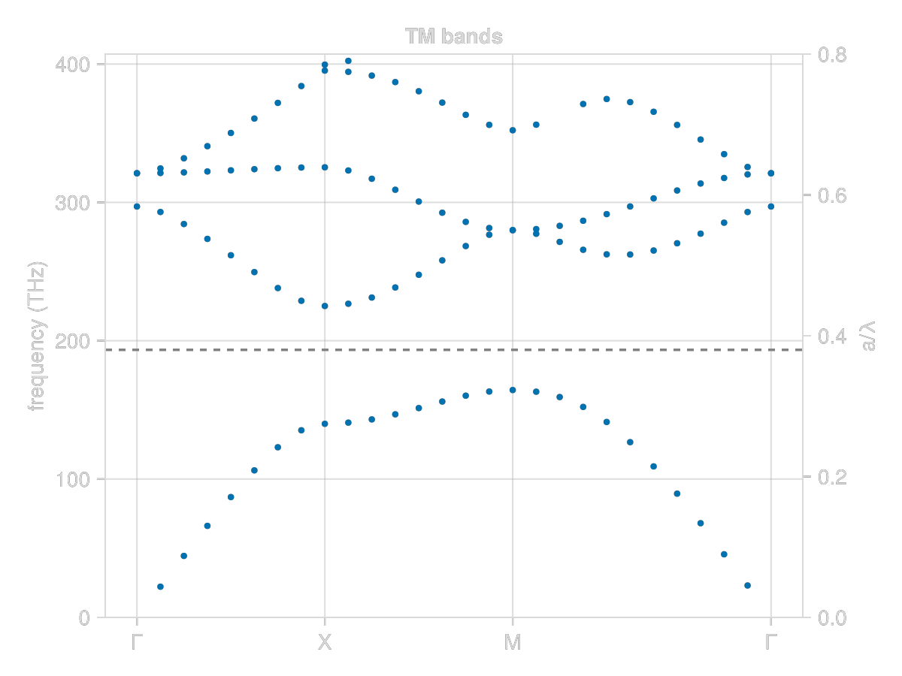

Band Structure of a Photonic Crystal
We compute the TM bands of the textbook photonic crystal, a square lattice of dielectric rods with ε = 8.9 and radius r = 0.2a (Joannopoulos et al., Photonic Crystals, ch. 5). Inside one unit cell, a Bloch mode of wavevector k and frequency ω is a field that scatters into itself with no driving field, so $(I - X\mathsf{G}_\circ)p = 0$ has a nonzero solution. In other words, $X\mathsf{G}_\circ$ has an eigenvalue equal to 1, where $\mathsf{G}_\circ$ is the Green operator of the periodic lattice at (k, ω). Note that we never solve a linear system here, everything is done with matvecs.
The figure below shows the crystal from above, and its Brillouin zone with the path Γ → X → M → Γ we sweep k along.

using GilaElectromagnetics, VoxelShapes, KrylovKit, Unitful, CairoMakie, LinearAlgebraUnits
Gila measures lengths in wavelengths of a reference frequency, and the frqPhz keyword (ζ) scales the frequency away from it (convention 4.1). We pick the reference wavelength λ₀ = 1.55 µm and a lattice constant of 0.38λ₀, which puts 1.55 µm at a/λ = 0.38, roughly in the middle of the gap we expect.
λ₀ = 1.55u"µm"
a = 19 // 50
a * λ₀The Unit Cell
The unit cell is 32 × 32 cells across and one cell thick. We make it periodic along z too, with k_z = 0, so the crystal is a stack of identical one-cell slices (i.e., a 2D crystal). VoxelShapes rasterizes the rod and blends its edge cells, so χ is the volume average of each cell.
ε = 8.9
n = 32
Δ = a // n # cell size
region = Region((n, n, 1), (Δ, Δ, Δ), (a / 2, a / 2, Δ / 2))
rod = FillableCylinder(Float64.((a / 2, a / 2, Δ / 2)), 0.2 * Float64(a), 1.0, ε - 1; interpolation = DielectricInterpolation())
χ = rasterize(Geometry([rod], 0.0, SuperResolutionAntiAliasing((4, 4, 1))), region)
unit_cell = GlaVol(region)On the left is the unit cell we actually mesh, a single slice of the rod (the see-through cells around its edge are the blended ones). Since the cell is periodic along all three axes, the crystal is that slice repeated forever, and on the right is a 4 × 4 patch of it, 24 slices tall. The orange rod is the one in our unit cell, whose outline is drawn on the floor.
icy blues and oranges that fade out as χ goes to zero, so the blended cells look soft
fade(colors) = [RGBAf(c.r, c.g, c.b, α) for (c, α) in zip(colors, range(0.1, 1, 64))]
ice = fade(cgrad(:ice)[range(0.3, 0.9, 64)])
orange = fade(cgrad(:Oranges)[range(0.4, 0.9, 64)])
cube = Rect3f(Vec3f(-0.5), Vec3f(1))
center(I) = Point3f((Tuple(I) .- 0.5) ./ n) # cell centers in units of a
fig = Figure(size = (900, 420))
ax = Axis3(fig[1, 1]; title = "unit cell", aspect = :data, elevation = 0.3π)
hidedecorations!(ax)
lines!(ax, Point3f[(0, 0, 0), (1, 0, 0), (1, 1, 0), (0, 1, 0), (0, 0, 0)]; color = :darkorange, linewidth = 2)
cells = findall(>(0), χ)
meshscatter!(ax, center.(cells); marker = cube, markersize = 1 / n, color = χ[cells], colormap = ice, colorrange = (0, ε - 1))
limits!(ax, 0, 1, 0, 1, 0, 1 / n)
crystal = repeat(χ, 4, 4, 24)
rod_cells = view(crystal, n+1:2n, n+1:2n, :) # the unit cell at (1, 1)
rod_cells[rod_cells .> 0] .+= 2(ε - 1) # moves its rod onto the orange third of the colormap
cells = findall(>(0), crystal)
ax = Axis3(fig[1, 2]; title = "crystal", aspect = :data, xlabel = "x (a)", ylabel = "y (a)", zlabel = "z (a)",
zticks = [0, 0.5], zlabeloffset = 50, protrusions = (70, 30, 30, 30))
lines!(ax, Point3f[(1, 1, 0), (2, 1, 0), (2, 2, 0), (1, 2, 0), (1, 1, 0)]; color = :darkorange, linewidth = 2)
meshscatter!(ax, center.(cells); marker = cube, markersize = 1 / n, color = crystal[cells],
colormap = [ice; fill(last(ice), 64); orange], colorrange = (0, 3(ε - 1)))
limits!(ax, 0, 4, 0, 4, 0, 24 / n)
colsize!(fig.layout, 1, Relative(1 / 3))
fig

The Eigenvalue Problem
Gila divides $\mathsf{G}_\circ$ by ζ² (convention 4.3), so at frequency ζ the susceptibility we pair it with is ζ²χ, and the mode condition becomes $ζ^2 X\mathsf{G}_\circ$ having an eigenvalue of 1.
With every axis periodic nothing radiates, so at real ζ the operator $\mathsf{G}_\circ$ is Hermitian. $ζ^2 X\mathsf{G}_\circ$ itself is not Hermitian, but it is similar to $ζ^2 X^{1/2} \mathsf{G}_\circ X^{1/2}$, which is, so Lanczos gives us real eigenvalues if we work with that instead.
The slices are also mirror symmetric in z, which means $\mathsf{G}_\circ$ never couples Ez to Ex or E_y. If we zero the x and y parts of $X^{1/2}$ we only see TM modes (E along the rods), and since TM fields are divergence free this also gets rid of the longitudinal eigenvalues near -χ.
The cell holds n² = 1024 cells, and Gila stores a field as its x, y and z blocks one after the other, so a field has 3n² entries and the x and y blocks take up the first 2n². The diagonal of $X^{1/2}$ is then
sqrt_X = [zeros(2n^2); sqrt.(vec(χ))];
nothing #hideBoth the uniform check and the sweep below need the few largest eigenvalues of $ζ^2 X^{1/2} \mathsf{G}_\circ X^{1/2}$. We start Lanczos from a vector in the range of $X^{1/2}$, so it never picks up the zeroed x and y parts.
function tm_eigenvalues(G₀, ζ, sqrt_X, howmany)
A(x) = ζ^2 .* sqrt_X .* (G₀ * (sqrt_X .* x))
vals, = eigsolve(A, sqrt_X .* randn(ComplexF64, length(sqrt_X)), howmany, :LR; ishermitian = true)
return real.(vals[1:howmany])
end;
nothing #hideAs ω grows the eigenvalues increase, except at the folded vacuum light lines $ω = c|k + g|$, where $\mathsf{G}_\circ$ has a pole and one eigenvalue drops from +∞ to -∞. So a band is an eigenvalue that rises through 1, and the light lines show up as eigenvalues that fall, which we skip. Below a frequency ω, the number of eigenvalues above 1 is the number of crystal bands minus the number of light lines. For these rods that count stays small, so a few of the largest eigenvalues (:LR) are enough. The figure below sketches what this looks like at a single k (the curves are made up, not computed).

Checking Against a Uniform Medium
Before the rods, we fill the whole cell with ε = 8.9. The bands are then the folded light lines of the medium, $ω = c|k + g|/\sqrt{ε}$. At X we have k = π/a along x, so the lowest band sits at a/λ = 1/(2√8.9). The light lines of k and k - 2π/a meet there, so at that frequency two eigenvalues should be 1, and we get them to within the discretization error.
The Bloch lattice is the blc keyword. Its ax and P say that all three axes are periodic with a period of (n, n, 1) cells, and its θ is the Bloch phase per period along each axis, θ = k·a (zero along z). We bind the part that never changes once.
lattice = (ax = (1, 2, 3), P = (n, n, 1))
ζ_uniform = 1 / (2sqrt(ε) * a)
G₀_uniform = VacuumGreenOperator{Float64}(unit_cell; frqPhz = ζ_uniform + 0im, blc = (; lattice..., θ = (1.0π, 0.0, 0.0)))
sqrt_X_uniform = [zeros(2n^2); fill(sqrt(ε - 1), n^2)]
μ_uniform = tm_eigenvalues(G₀_uniform, ζ_uniform, sqrt_X_uniform, 4)Sweeping the Brillouin Zone
We walk Γ → X → M → Γ, giving θ in radians as floats, which fill about 3 times faster than exact Rational twists. A new frequency needs a new operator (i.e., a new fill of the lattice sum), but a new k only needs setBlc!, which refills the same operator in place about 5 times faster than rebuilding it, so the frequency loop goes on the outside.
We sweep a/λ (the frequency in units of c/a) rather than the frequency itself, and ζ = (a/λ)/a. The grid deliberately steps over a/λ = 0.5, since at X that is exactly on a light line, where the lattice sum has a pole and Gila refuses to fill it.
ΓX = [(t, 0.0, 0.0) for t in 0:π/8:7π/8]
XM = [(1.0π, t, 0.0) for t in 0:π/8:7π/8]
MΓ = [(t, t, 0.0) for t in range(π, 0, 12)]
path = [ΓX; XM; MΓ]
a_over_λ = range(0.005, 0.8, 80)
n_eig = 6
μ = zeros(n_eig, length(path), length(a_over_λ))
for j in eachindex(a_over_λ)
ζ = a_over_λ[j] / a
G₀ = VacuumGreenOperator{Float64}(unit_cell; frqPhz = ζ + 0im, blc = (; lattice..., θ = path[1]))
for (i, θ) in enumerate(path)
setBlc!(G₀, θ)
μ[:, i, j] = tm_eigenvalues(G₀, ζ, sqrt_X, n_eig)
end
endBand Diagram
Between two neighboring frequencies, a band is the r-th largest eigenvalue rising through 1, and a linear interpolation finds where it crosses. We keep the path index and a/λ of every crossing.
band_k = Int[]
band_a_over_λ = Float64[]
for r in 1:n_eig, j in 1:length(a_over_λ)-1, i in eachindex(path)
μ₁, μ₂ = μ[r, i, j], μ[r, i, j+1]
if μ₁ < 1 <= μ₂
push!(band_k, i)
push!(band_a_over_λ, a_over_λ[j] + (1 - μ₁) / (μ₂ - μ₁) * step(a_over_λ))
end
end
THz(aλ) = ustrip(u"THz", aλ / a * Unitful.c0 / λ₀)
X_idx = length(ΓX) + 1
M_idx = length(ΓX) + length(XM) + 1
fig = Figure()
ax = Axis(fig[1, 1]; ylabel = "frequency (THz)", title = "TM bands",
xticks = ([1, X_idx, M_idx, length(path)], ["Γ", "X", "M", "Γ"]))
ax2 = Axis(fig[1, 1]; ylabel = "a/λ", yaxisposition = :right, ygridvisible = false)
hidexdecorations!(ax2)
scatter!(ax, band_k, THz.(band_a_over_λ); markersize = 6)
hlines!(ax, THz(a); color = :gray, linestyle = :dash) # 1.55 µm
ylims!(ax, 0, THz(0.8))
ylims!(ax2, 0, 0.8)
figThe lowest band tops out at M and the second starts at X, and between them is the TM gap, from a/λ = 0.323 to 0.442 (164 to 225 THz). Its width is 31.2% of its middle frequency, against the 31.1% Joannopoulos et al. report, and the dashed line at 1.55 µm sits inside it as planned.


This page was generated using Literate.jl.